aligned terminal-roll · 2026-08-05
Aligned terminal-roll — Sprints 01–06
Combined printable readout. Experiments through Sprint 06 candidate spherical tests. Check-in 6 is the open gate.
Check-in ledger
| # | Milestone | Interpretation | Decision | Status |
|---|---|---|---|---|
| 1 | M1 Terminal-roll symmetry | SUPPORTED | CONTINUE | Approved |
| 2 | M2 Two-dimensional reduction | SUPPORTED | CONTINUE | Approved |
| 3 | M3 Architecture comparison | PARTIALLY SUPPORTED | CONTINUE WITH CHANGED SCOPE | Approved |
| 4 | M4 Pointing manifold | SUPPORTED LOCALLY | CONTINUE WITH CHANGED SCOPE | Approved |
| 4B/04C | M4 Sequential chart + method audit | SUPPORTED LOCALLY | Case A / Pass | Approved |
| 5 | M5 Fiber legitimacy | SUPPORTED LOCALLY | CONTINUE WITH CHANGED SCOPE | Approved |
| 6 | M6 Spherical equivalence | PENDING | AWAITING REVIEW | Next |
Still blocked
- ATR_EXP_036 spherical motion equivalence
- McCarthy–Soh classification
- canonical or architecture-derived fiber
- exact UR / URDF / sixr_grashof
Sprint 01 — Spatial Foundations
Terminal-roll fixture · Complete · M1 — Terminal-roll symmetry established
Check-in. SUPPORTED / CONTINUE
If p lies on R6 and d is parallel to w6, then dp/dq6 = 0 and dd/dq6 = 0, while full tool orientation changes by roll about d.
| ID | Title | Status | Expected | Observed |
|---|---|---|---|---|
| ATR_EXP_001 | Aligned positive control | PASS | position invariant; pointing invariant; roll recovers Delta q6 | max|dp|=0.000e+00 m; max|dd|=0.000e+00; max roll err=1.332e-15 rad |
| ATR_EXP_002 | Off-axis task point | PASS | position changes; pointing invariant | position_changes=True; pointing_changes=False; max|dp|=4.000e-02 m |
| ATR_EXP_003 | Misaligned pointing direction | PASS | position invariant; pointing changes | position_changes=False; pointing_changes=True; max|dd|=3.973e-01 |
| ATR_EXP_004 | Combined alignment violation | PASS | position and pointing both change | position_changes=True; pointing_changes=True |
| ATR_EXP_005 | Finite-difference refinement | PASS | analytical vs central-FD derivative error converges over usable h | h=0.01: dp_err=3.333e-07, dd_err=3.311e-06; h=0.001: dp_err=3.333e-09, dd_err=3.311e-08; h=0.0001: dp_err=3.336e-11, dd_err=3.312e-10; h=1e-05: dp_err=4.699e-13, dd_err=3.471e-12; h=1e-06: dp_err=5.174e-12, dd_err=3.713e-12 |
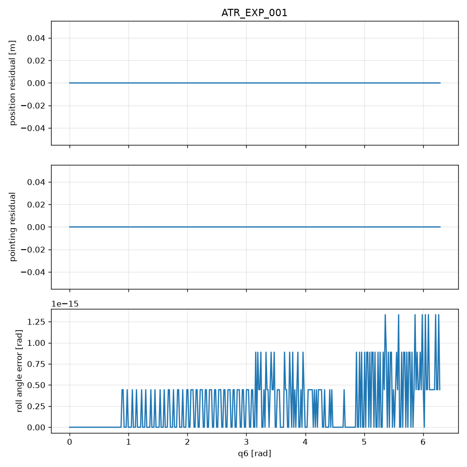

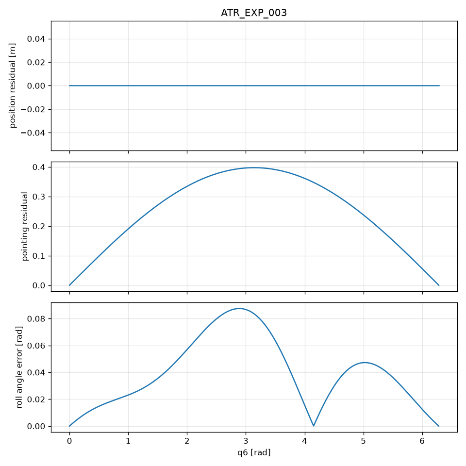
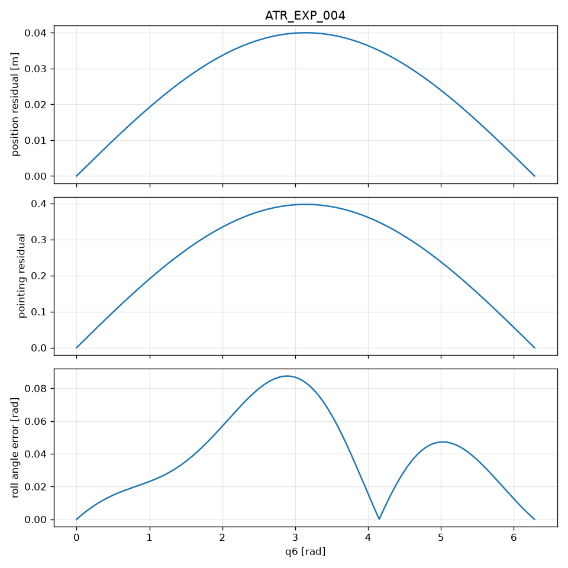
Sprint 02 — Generic aligned 6R
Stage A differential reduction · Complete / Check-in 2 approved · M2 — Two-dimensional reduction established
Check-in. SUPPORTED / CONTINUE
For the GenericAligned6R skew reference chain, the named regular configuration and all 48 seeded configurations satisfy the expected local fixed-position and position-and-pointing ranks. Terminal roll is the sole task-kernel direction, and the quotient fixed-position tangent space has rank-two pointing motion. This establishes the numerical Stage A reference result but does not yet establish architecture independence or global continuation.
| ID | Title | Status | Expected | Observed |
|---|---|---|---|---|
| ATR_EXP_006 | Regular configuration rank suite | PASS | rank(J_p)=3, ker dim 3, J_pd rank 5 nullity 1 aligned to e6, rank(J_d N_red)=2 | rank_jp=3, null_jp=3, rank_jpd=5, null_jpd=1, align=0.000e+00, rank_jd_nred=2 |
| ATR_EXP_007 | Jacobian finite-difference refinement | PASS | analytical vs central-FD Jacobian error converges over usable h | h=0.01: jp=1.528e-05, jd=2.853e-05; h=0.001: jp=1.528e-07, jd=2.853e-07; h=0.0001: jp=1.528e-09, jd=2.851e-09; h=1e-05: jp=1.824e-11, jd=3.119e-11; h=1e-06: jp=1.473e-10, jd=1.086e-10 |
| ATR_EXP_008 | Full-chain terminal-roll check | PASS | full-chain dp/dq6=0, dd/dq6=0, position/pointing invariant, roll recovers Delta q6 | ||J_p e6||=6.015e-17, ||J_d e6||=0.000e+00, |dp|=0.000e+00 m, |dd|=5.551e-17, roll_err=4.441e-16 rad, axis_mis=2.388e-16 |
| ATR_EXP_009 | Alignment negative controls | PASS | off-axis p makes J_p e6 nonzero; misaligned d makes J_d e6 nonzero | off-axis ||J_p e6||=3.000e-02; misaligned ||J_d e6||=2.474e-01 |
| ATR_EXP_010 | Seeded survey and named near-singular sample | PASS | regular subset supports C6-C8; named sample is singular or near-singular and labeled separately | survey regular=48/48, singular_jp=0, named rank_jp=3, named_sigma_ratio=1.431e-02, median_regular_sigma_ratio=2.240e-01 |


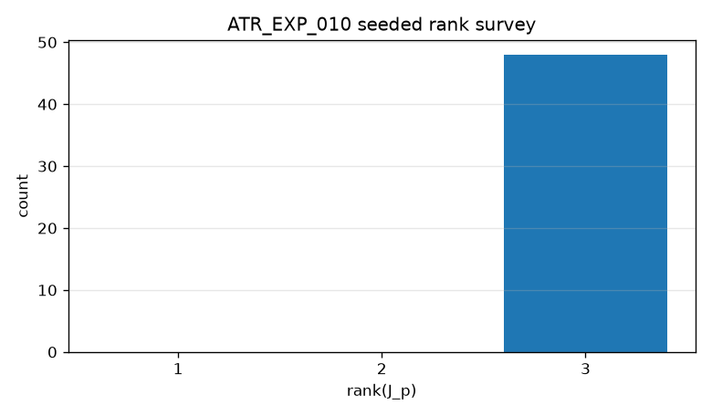
Sprint 03 — Architecture comparison
Stage A survival and local compound-joint probes · Complete / Check-in 3 approved with changed scope · M3 — Architecture comparison
Check-in. PARTIALLY SUPPORTED / CONTINUE WITH CHANGED SCOPE
Stage A survives at the named regular configurations of GenericAligned6R, IntersectingPairsAligned6R, and URLikeAligned6R. ATR_EXP_013 and ATR_EXP_014 do not independently establish local compound-joint equivalence: the compound basis is the fixed-roll portion of the same physical J_p null space used to construct N_red. SUUR remains a proposed exact kinematic regrouping. IntersectingPairsAligned6R is the continuation benchmark because it instantiates the workshop architecture, not because those tests selected it.
| ID | Title | Status | Expected | Observed |
|---|---|---|---|---|
| ATR_EXP_011 | Intersecting-pairs Stage A | PASS | IntersectingPairsAligned6R Stage A C6–C8; exact R1∩R2 and R3∩R4 | regular=True, rank_jp=3, rank_jpd=5, rank_jd_nred=2, d_ua=0.000e+00, d_ub=0.000e+00 |
| ATR_EXP_012 | UR-like Stage A | PASS | URLikeAligned6R Stage A C6–C8; exact R2∥R3 and R4∩R5∩R6 | regular=True, rank_jp=3, rank_jpd=5, rank_jd_nred=2, elbow_par=0.000e+00, wrist=('0.000e+00', '0.000e+00', '0.000e+00') |
| ATR_EXP_013 | Compound-joint principal angles | PASS | max principal angle(N_red, compound embed) <= 1e-08 rad | angles_rad=('0.000e+00', '0.000e+00'), max=0.000e+00 |
| ATR_EXP_014 | Local N_red step probes | PASS | local 3 N_red steps keep ||p-p0|| <= 1e-10 m and pointing increments agree within 1e-08 | max_p_residual_m=1.570e-16, max_pointing_diff=0.000e+00 |
| ATR_EXP_015 | Three-architecture comparison | PASS | Stage A survives all three architectures; local C9 reported; continuation parent recorded but not auto-selected | stage_a_all=True, local_c9=True, recommended_parent=IntersectingPairsAligned6R, auto_selected=false |

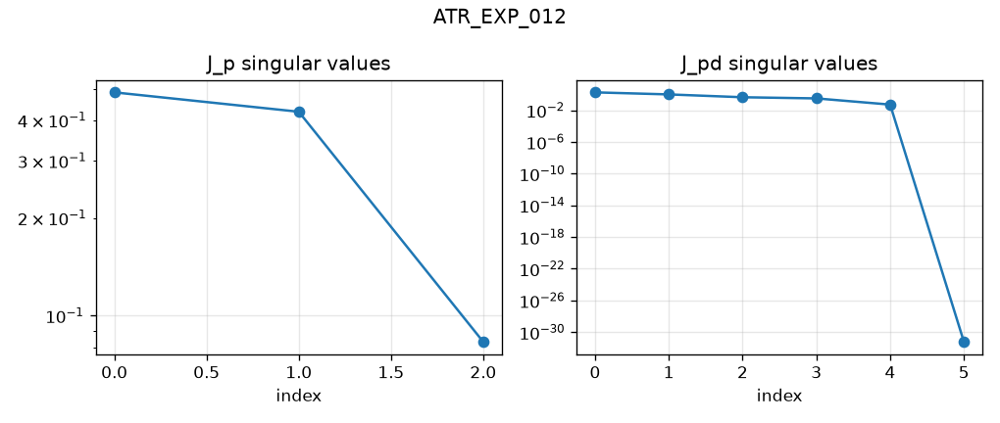


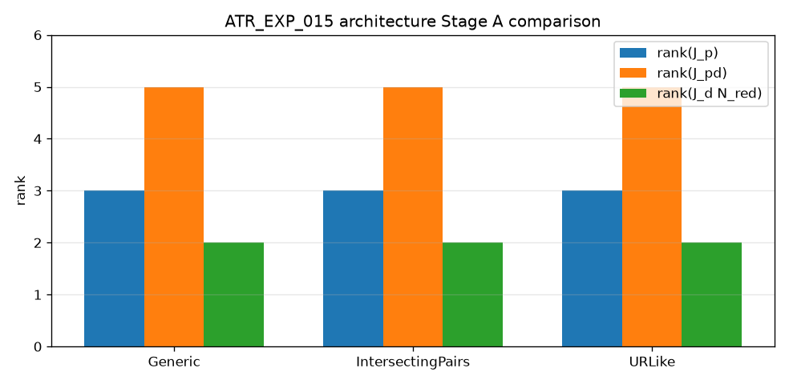
Sprint 04 — Pointing manifold
Local fixed-position continuation and discriminating SUUR tests · Implementation complete / Check-in 4 draft · M4 — Two-dimensional pointing surface
Check-in. SUPPORTED / CONTINUE
Intersecting-pair distances persist away from home, φ is defined only on that geometry, and GenericAligned6R remains a negative control where the deprecated compound-tangent test still passes. Local continuation patches on IntersectingPairsAligned6R and URLikeAligned6R stay near p0 with rank-two pointing on the regular subset. This is a local C10 patch, not a fiber or spherical RRRR.
| ID | Title | Status | Expected | Observed |
|---|---|---|---|---|
| ATR_EXP_016 | Intersecting-pair persistence | PASS | IntersectingPairsAligned6R pair distances remain 0 at regular and seeded q | named_ua=0.000e+00, named_ub=0.000e+00, seeded_max_ua=0.000e+00, seeded_max_ub=0.000e+00 |
| ATR_EXP_017 | Nonintersecting negative control | PASS | GenericAligned6R pairs do not intersect; φ undefined; old principal angles ~0 | dist_ua=1.535e-02, dist_ub=1.386e-01, phi_defined=False, old_max_angle=0.000e+00 |
| ATR_EXP_018 | SUUR coordinate map and closure | PASS | φ defined on IntersectingPairsAligned6R; closure residuals below tolerance | defined=True, closed=True, pos_res=0.000e+00, extra_max_pos=0.000e+00 |
| ATR_EXP_019 | Intersecting-pairs continuation patch | PASS | IP continuation patch is locally 2D with rank-two pointing away from labeled singular samples; φ defined on the regular subset | regular=81/81, singular=0, failed=0, max_p=6.991e-15, reverse_err=0.000e+00, phi_regular=True |
| ATR_EXP_020 | UR-like continuation patch | PASS | URLike continuation via the same API yields a local 2D regular subset; no SUUR map required | regular=81/81, singular=0, failed=0, max_p=9.845e-15, reverse_err=0.000e+00 |
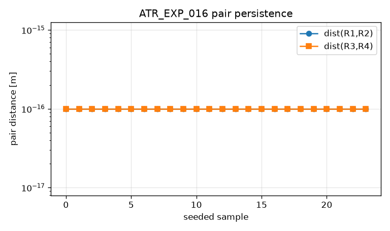
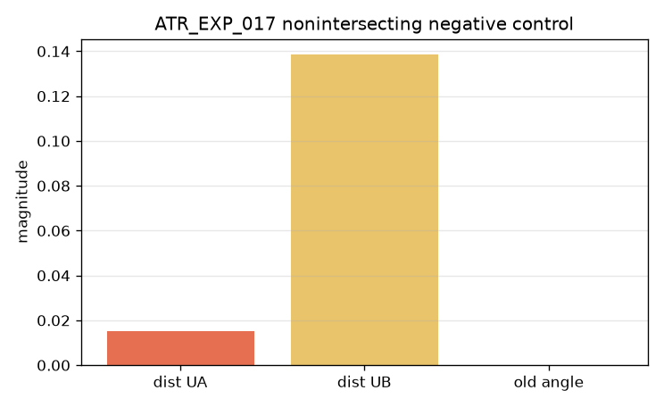

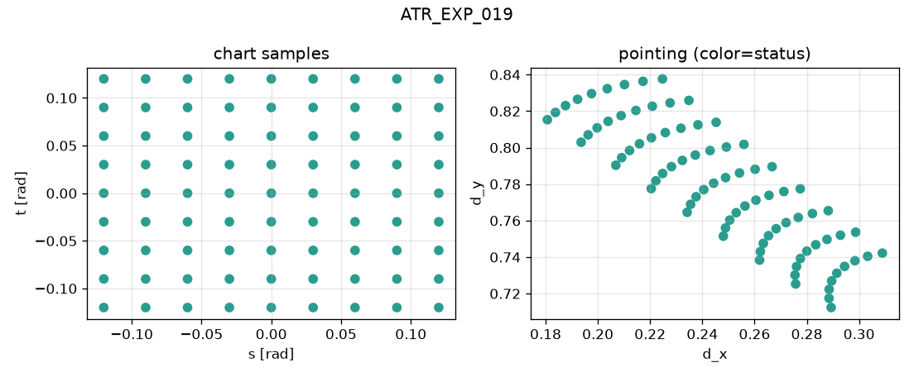
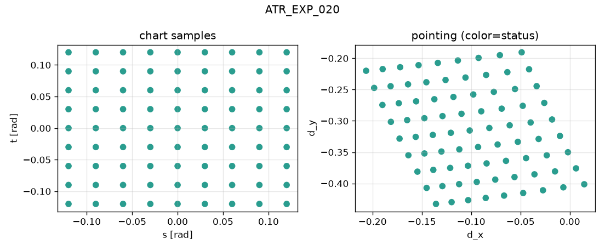
Sprint 04B / 04C — Sequential chart validation
Endpoint reverse, rank-two charts, refinement, and claim-language audit · Complete — Check-in 4B Case A / 04C Pass · M4 — Two-dimensional pointing surface
Check-in. SUPPORTED LOCALLY / CONTINUE / Case A
Check-in 4B Case A and Check-in 04C Pass authorize Sprint 05 fiber work. ATR_EXP_024 is shared-microstep consistency, not independent refinement.
| ID | Title | Status | Expected | Observed |
|---|---|---|---|---|
| ATR_EXP_021 | Sequential forward/reverse rays | PASS | Sequential forward/reverse rays return within 1e-6 rad / 1e-8 pointing on both architectures and both chart axes | IntersectingPairsAligned6R/s: eq=1.010e-08, ed=6.882e-09, from_end=True; IntersectingPairsAligned6R/t: eq=1.967e-08, ed=5.933e-09, from_end=True; URLikeAligned6R/s: eq=1.678e-10, ed=1.199e-10, from_end=True; URLikeAligned6R/t: eq=1.402e-09, ed=9.454e-10, from_end=True |
| ATR_EXP_022 | Intersecting-pairs transported chart | PASS | 100% regular sequential chart; rank(Q)=rank(D)=2 at every interior node; no duplicates or failed samples; pair intersections persist | regular=81/81, rejected=0, interior=49, rankQ2=49, rankD2=49, duplicates=0, max_ua=0.000e+00, max_ub=0.000e+00 |
| ATR_EXP_023 | UR-like transported chart | PASS | 100% regular sequential chart; rank(Q)=rank(D)=2 at every interior node; no duplicates or failed samples; no SUUR/pair fields required | regular=81/81, rejected=0, interior=49, rankQ2=49, rankD2=49, duplicates=0 |
| ATR_EXP_024 | Shared-microstep consistency | PASS | Shared-node q/d agree under the same internal microstep; rank classifications remain two. This is macro-grid consistency, not independent numerical refinement | IntersectingPairsAligned6R: shared=81, dq=0.000e+00, dd=0.000e+00, ranks=True/True/True; URLikeAligned6R: shared=81, dq=0.000e+00, dd=0.000e+00, ranks=True/True/True |
| ATR_EXP_025 | Independent-step refinement | PASS | Rectangular-loop closure error decreases when the step is halved | IntersectingPairsAligned6R: coarse_eq=3.301e-04, fine_eq=4.067e-05, decreased=True; URLikeAligned6R: coarse_eq=3.792e-05, fine_eq=4.779e-06, decreased=True |
| ATR_EXP_026 | Alternate-path and duplicate analysis | PASS | No duplicate solutions; s-then-t vs t-then-s discrepancy remains small and stable | IntersectingPairsAligned6R: dups=0, alt_coarse=3.304e-04, alt_fine=3.301e-04; URLikeAligned6R: dups=0, alt_coarse=3.791e-05, alt_fine=3.810e-05 |
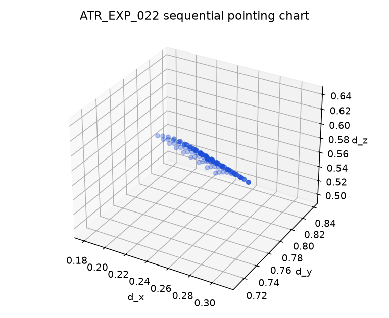
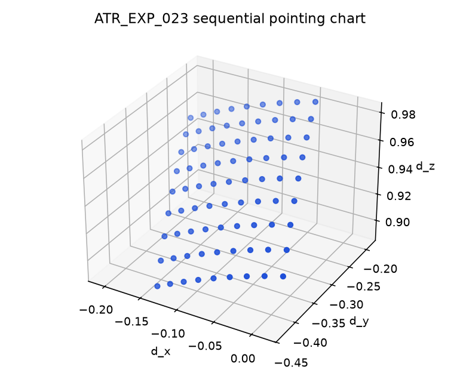
Sprint 05 — Explicit one-dimensional fiber
Task-space scalar fibers on the validated pointing parent · Closed — Check-in 5 CONTINUE WITH CHANGED SCOPE · M5 — Fiber legitimacy
Check-in. SUPPORTED LOCALLY / CONTINUE WITH CHANGED SCOPE
Primary and alternate fibers exist on IP and UR-like seeds. They are candidate slices, not architecture-derived canonical fibers. Joint-freeze control is distinct.
| ID | Title | Status | Expected | Observed |
|---|---|---|---|---|
| ATR_EXP_027 | Independence of h = n · d | PASS | Primary h=n·d is independent at both regular seeds: rank 4 / nullity 1 and dh/dq6=0 | IntersectingPairsAligned6R: rank=4, null=1, dh_dq6=0.000e+00, independent=True; URLikeAligned6R: rank=4, null=1, dh_dq6=0.000e+00, independent=True |
| ATR_EXP_028 | Intersecting-pairs sequential fiber | PASS | Sequential ±σ fiber is regular, reversible from the endpoint, and has a noncollapsed pointing image of local rank 1 | IntersectingPairsAligned6R: n_accepted=9, n_failed=0, reverse_eq=2.922e-08, reverse_ed=7.525e-09, from_end=True, image_dmax=6.150e-02, local_rank1=True |
| ATR_EXP_029 | UR-like sequential fiber | PASS | Sequential ±σ fiber is regular, reversible from the endpoint, and has a noncollapsed pointing image of local rank 1 | URLikeAligned6R: n_accepted=9, n_failed=0, reverse_eq=2.741e-09, reverse_ed=1.888e-09, from_end=True, image_dmax=1.641e-01, local_rank1=True |
| ATR_EXP_030 | Alternate task-space h artifact control | PASS | Alternate task-space h'=n'·d remains a regular reversible pointing fiber; q2-freeze control is a distinct path | IntersectingPairsAligned6R: alt_ind=True, alt_rev_ed=1.430e-08, freeze_dq=1.482e-02, distinct=True; URLikeAligned6R: alt_ind=True, alt_rev_ed=3.300e-09, freeze_dq=1.557e-01, distinct=True |
| ATR_EXP_031 | Independent-step fiber refinement | PASS | With max_microstep=None over the same σ travel, reverse tracking succeeds and both joint and pointing return errors decrease when Δσ is halved; shared-σ samples stay within 1e-3. Tight 1e-6/5e-8 reverse gates apply to microstepped runs (028/029), not this independent-step refinement diagnostic | IntersectingPairsAligned6R: coarse_eq=6.295e-06 -> fine_eq=7.884e-07, shared_dq=6.426e-05; URLikeAligned6R: coarse_eq=5.915e-07 -> fine_eq=7.399e-08, shared_dq=3.310e-05 |
Sprint 06 — Candidate spherical equivalence
Topology-derived S−UA−UB−R5 tests on Sprint 05 candidate fibers · 032–035 complete / 036 deferred / Check-in 6 next · M6 — Spherical equivalence decision
Check-in. PENDING CHECK-IN 6 / AWAITING REVIEW
No wrap duplicates. IP primary and alternate fail exact concurrency/arcs (ρ≈0.7–0.8 m). UR-like axis construction is not applicable. Terminal-roll reduction and local fiber existence stand.
| ID | Title | Status | Expected | Observed |
|---|---|---|---|---|
| ATR_EXP_032 | Duplicate scan on all four candidate fibers | PASS | All four candidate fibers have no wrap-equivalent repeats at distinct σ (tol=1e-06 rad) | IntersectingPairsAligned6R/primary: stations=9, dups=0, min_nn=2.999e-02, passed=True; IntersectingPairsAligned6R/alternate: stations=9, dups=0, min_nn=2.999e-02, passed=True; URLikeAligned6R/primary: stations=9, dups=0, min_nn=3.000e-02, passed=True; URLikeAligned6R/alternate: stations=9, dups=0, min_nn=3.000e-02, passed=True |
| ATR_EXP_033 | IP primary S−UA−UB−R5 global-center invariants | PASS | Named residual report for S-UA-UB-R5: exact, approximate, fail, or unresolved using global c*, fixed-center drift, arcs, and body-fixed axis legitimacy | [fail] IntersectingPairsAligned6R/primary: verdict=fail, c*_rms=2.477e-01 m, c*_max=3.338e-01 m, drift=9.175e-02 m, arc=7.714e-01 rad, body_fixed=5.109e-01 rad, simple_lock=False, locking=fail |
| ATR_EXP_034 | IP alternate S−UA−UB−R5 global-center invariants | PASS | Named residual report for S-UA-UB-R5: exact, approximate, fail, or unresolved using global c*, fixed-center drift, arcs, and body-fixed axis legitimacy | [fail] IntersectingPairsAligned6R/alternate: verdict=fail, c*_rms=1.597e-01 m, c*_max=3.105e-01 m, drift=7.589e-02 m, arc=8.617e-01 rad, body_fixed=5.859e-01 rad, simple_lock=False, locking=fail |
| ATR_EXP_035 | UR-like duplicate scan plus exploratory fixed tuples | PASS | UR-like duplicate scans plus exploratory fixed R1–R5 four-subset diagnostics; no exact RRRR claim; no SUUR required | [exploratory_fixed_physical_subset] primary: dups=0, dup_passed=True, best=R1-R2-R3-R4 max=1.519e-01 m; alternate: dups=0, dup_passed=True, best=R1-R2-R3-R4 max=1.503e-01 m |
| ATR_EXP_036 | Tangent and continued-motion equivalence | DEFERRED | Local tangent and continued-motion match a well-posed spherical RRRR | [deferred] Deferred — no exact IP candidate from ATR_EXP_033/034 |
Reproduce
python scripts/generate_atr_sprint01_readout.pypython scripts/generate_atr_sprint02_readout.pypython scripts/generate_atr_sprint03_readout.pypython scripts/generate_atr_sprint04_readout.pypython scripts/validate_pointing_chart.pypython scripts/validate_pointing_fiber.pypython scripts/validate_spherical_candidates.pypython scripts/generate_atr_sprint01_06_printout.py